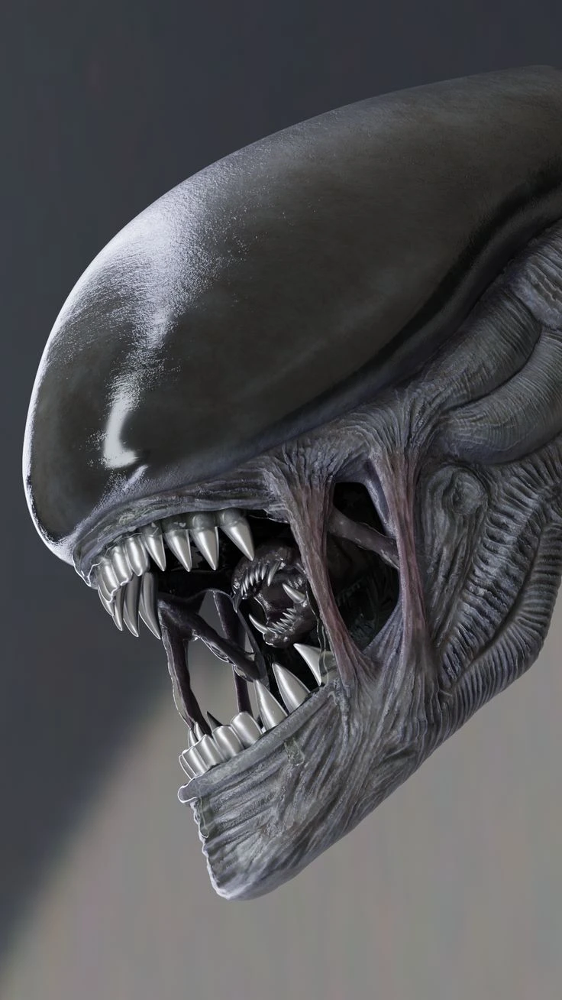
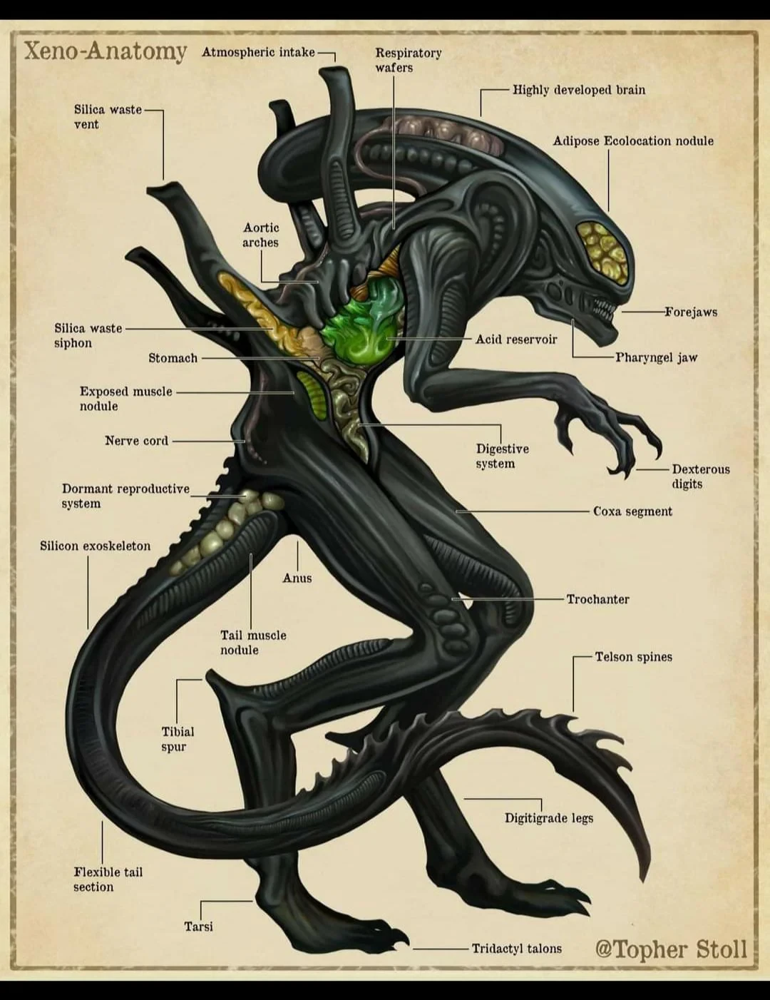
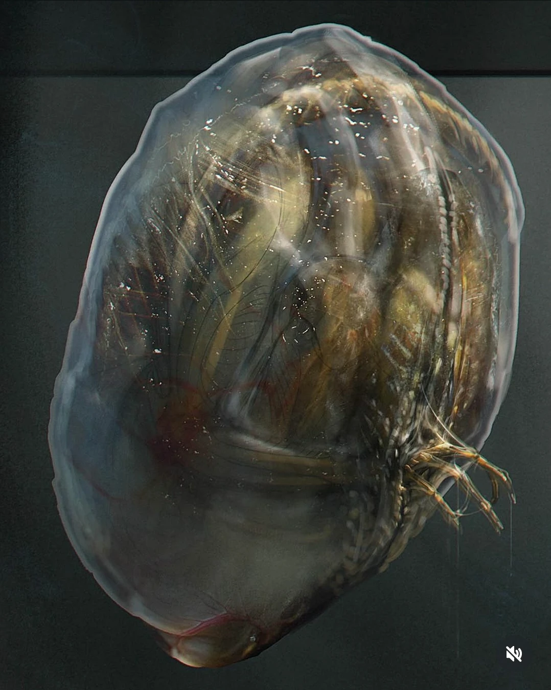

Jump to: Anatomy | Life Cycle | Types | Your Notes
What Is It?

The small inner jaw coming out of the Xenomorph's mouth. (cults3d.com)
The Xenomorph is the alien from the movies. It has a hard black shell, a long tail, and acid for blood. It needs another living thing, called a host, to reproduce.
Its long, smooth head has no eyes. The scariest part is its mouth. Inside its main jaws is a second, smaller jaw that can shoot forward to attack, like in the picture.
Xenomorphs are also very smart. They can hide in air vents, cut the power, and work together to trap their prey.
They are also fast, strong, and almost silent, and they can climb on walls and ceilings, so people usually don't see them coming until it's too late.
Anatomy
This chart shows the parts of a Xenomorph's body, like its second jaw, its acid reservoir, and its bladed tail.

A labeled chart of the Xenomorph's body parts. (Art by Topher Stoll)
Download this chart
Life Cycle
- Egg - laid by the Queen. It opens when something walks by.
- Facehugger - grabs onto a person's face and puts an embryo inside them.
- Chestburster - comes out of the person's chest.
- Cocoon - the chestburster wraps itself in a hard shell and grows inside it.
- Adult - breaks out of the cocoon at about 7 feet tall.
- Queen - the biggest one. She lays all the eggs.
To me, the chestburster is the freakiest stage.
The Cocoon Stage
The cocoon stage was first shown in Alien: Romulus (2024). The chestburster makes a see-through, resin-like shell around itself. Inside, it grows into a full adult in just a few minutes, then claws its way out.
Fans liked this because it explains something the older movies never did: how a tiny chestburster turns into a giant alien so fast.

A chestburster growing into an adult inside its cocoon. (Alien fan art)
Neomorphs
In Alien: Covenant (2017), the crew finds small black egg sacs on the ground. When someone steps on one, it shoots out a cloud of tiny spores. The spores fly into a person's ear or nose.
The person then becomes the host for a Neomorph. It's a pale white creature that bursts out of the person's back instead of their chest.
Where Do Xenomorphs Come From?
The movies never give one clear answer, but there are three main ideas:
- The Black Goo - In Prometheus, the Engineers (an ancient alien race) have a black liquid that changes any living thing it touches into a monster. It may have been made as a weapon.
- David's Experiments - In Alien: Covenant, the android David spends ten years experimenting with the black goo. He ends up making the eggs and facehuggers that we see in the first movie.
- A Natural Species - Older Alien comics and books say Xenomorphs evolved naturally on a dangerous home planet, which is why they have acid blood and hard shells.
I think they're a natural species, but the Engineers may have changed them over time.
Types of Xenomorphs
| Type | First Movie | Notes |
|---|---|---|
| Drone | Alien (1979) | The normal adult |
| Warrior | Aliens (1986) | Guards the hive |
| Runner | Alien 3 (1992) | Walks on four legs |
| Queen | Aliens (1986) | Lays the eggs |
Your Notes
Click in the boxes below to type your own notes.
Internecivus raptus
Type your notes here...